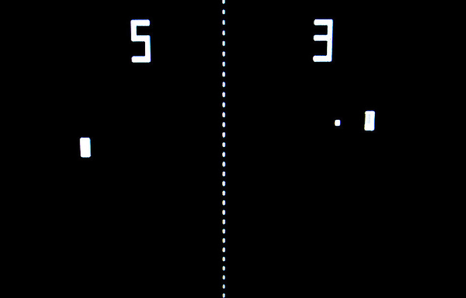

Opis projektu
Napisałem grę PinPong samodzielnie, korzystając z narzędzia Processing. Jest to moja interpretacja klasycznej retro gry Pong, która została zoptymalizowana dla dwóch graczy. W grze gracze kontrolują paletki, które poruszają się w pionie, starając się odbijać piłeczkę i zdobywać punkty. Projekt został zrealizowany przy użyciu języka programowania Java.
Zrzuty ekranu

Funkcje
- Tryb gry dla dwóch graczy: Gra PinPong oferuje możliwość rywalizacji między dwoma graczami. Każdy gracz kontroluje swoją paletkę, starając się utrzymać piłeczkę w grze i zdobywać punkty poprzez odbijanie jej od paletki przeciwnika.
- Mechanika odbijania piłeczki: Piłeczka porusza się po planszy i odbija się od paletki graczy oraz od ścianek bocznych. Gracze muszą odpowiednio poruszać paletkami, aby skierować piłeczkę w kierunku przeciwnika i uniknąć utraty punktu.
- Licznik punktów: Gra śledzi punktację obu graczy i wyświetla ją na ekranie. Za każde skuteczne odbicie piłeczki przez paletkę przeciwnika gracz otrzymuje punkt. Gracz, który zdobędzie określoną liczbę punktów, wygrywa rozgrywkę.
- Prosta oprawa graficzna: Gra PinPong posiada retro-stylową oprawę graficzną, nawiązującą do klasycznych gier z lat 80. Prosta i czytelna wizualizacja umożliwia skupienie się na rozgrywce.
Technologie
W wym projekcie wykorzystano następujące technologie:
- Processing: Narzędzie do tworzenia interaktywnych aplikacji i gier. Wykorzystałem Processing do napisania gry PinPong i implementacji mechaniki rozgrywki.